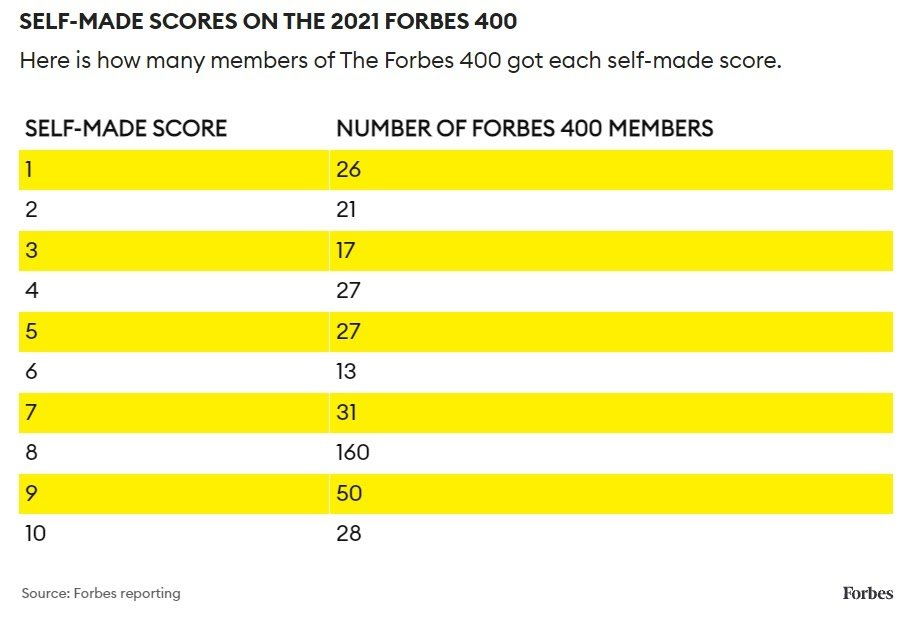

不过我发现更有意思的是，不少人听到50-70%这个数字后，庆幸自己至少还有机会改变剩下的那30-50%，其实这也是个大大的误解，而且这个误解更很难消除，因为其背后的原理解释/理解起来更困难，
简单说，剩下的那30-50%，其实大部分来自三种随机因素：
1）测量误差：比如同一个被测对象，不同的测试者去测，测得的数字不同，其中定有误差，这种误差在心理学测量中比其他（比如生理）领域更严重，
2）指标设计偏差，也就是一个度量指标的设计，使得它无法完全准确的反映出它本来想要测量的那个东西，任何指标都存在这种问题，心理学指标当然更严重，
3）运气成分：所谓运气就是你无法干预控制的东西，换句话说，你啥也做不了，
这样你就理解了，为何 Robert Plomin 他们发现，所有他们考察过的个体成长中的共享环境条件（比如是否共享家庭，是否共享父母，是否共享学校，是否共享某种教育模式，是否共享某种财富水平……），都对解释个性差异的毫无贡献，就是说，是否纳入这些因素，丝毫不能改变个性差异中的未解释部分的比例，
通俗的说就是，试图通过改变这些因素来改进孩子的个性/智力发育，是徒劳的，（当然，这绝不是说做这些事情毫无意义，它们可能有其他效果，比如让孩子过的更开心，更有见识，更有教养，更有品味……这些都可以很有意义，但改变不了他们的个性和智力），
当然，也别太绝望，并不是说个性/智力发育问题上你什么也不能做，那些测量的一个缺陷就是他们的采样对象基本上都是美国的普通正常家庭，所以自动排除了一些极端条件，而某些极端条件确实是会造成显著影响的，
比如某种水平以上的铅污染和营养不良显然会影响智力发育，幼儿期的严重虐待或许也会影响某些个性成分，营养不良和缺钙当然会影响身高……
所以，父母们在孩子的生理/个性/智力发育上至少有一件事情可以做：帮他们避免那些恶性极端条件
在复杂系统中，避免犯大错，要比追求最优解更加重要
1）恶性极端条件可远远不只是均值以下，2）正向极端条件没啥用，就好比你成吨成吨的喝奶补钙，也养不出姚明来 //@揶哼:如果平均值以下的环境有影响，那么远高于平均值的环境（比如前0.1%的家庭）是否也有提升呢？
这是一，同时也是因为缺乏规模化生产模式来内化创新收益，比如18世纪前半叶纺织业创新大量涌现，给整个行业带来的增长也非常巨大，但创新者本人得到的收益并不多，直到阿克莱特实现工厂化生产 //@tertio:应该是因为那时候能在市场上流通的财富并不多，大部分财富还是土地
未能从其发明中得到太多好处的更好例子其实是纽科门，因为他的蒸汽机没有实现工厂化生产，每台都是现场组装的（所以每台都不一样），他只能从由他现场指导安装的那些机器得到报酬，数量自然有限 //@whigzhou: 没有暴富不等于没有致富，第一代工业革命家的财富激励虽不如后来那么耀眼，也是足够强的，
福布斯Top400的自成指数分布，指数=1的意思是财富完全靠继承而来，自己创业者，家底越薄的，得分越高，总体看，自成率还是非常高的
{width = 50%}